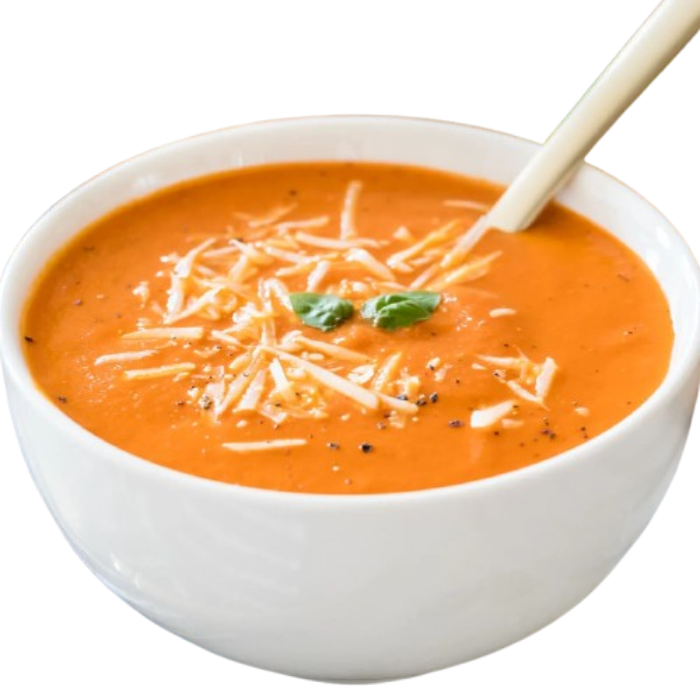
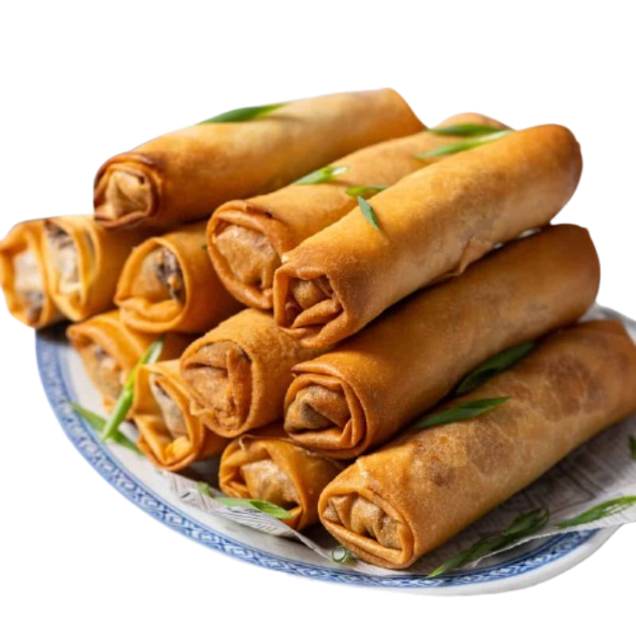
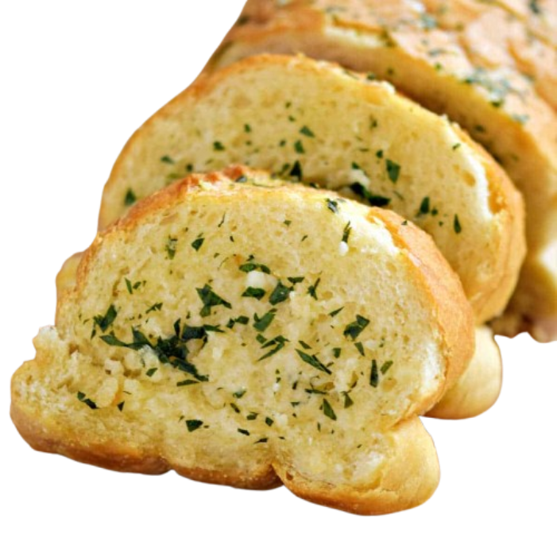
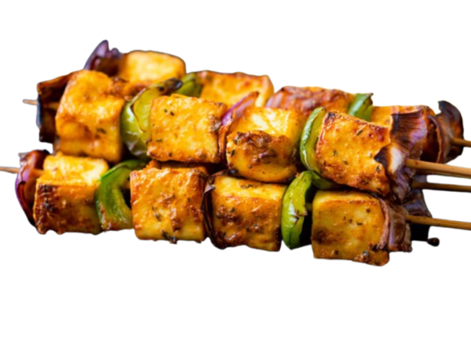
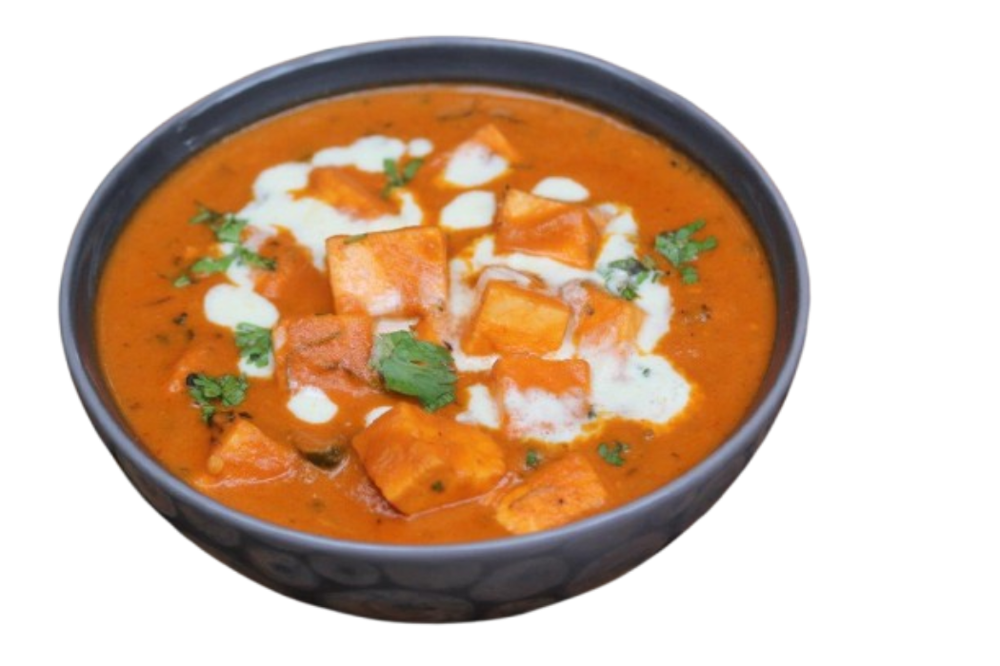
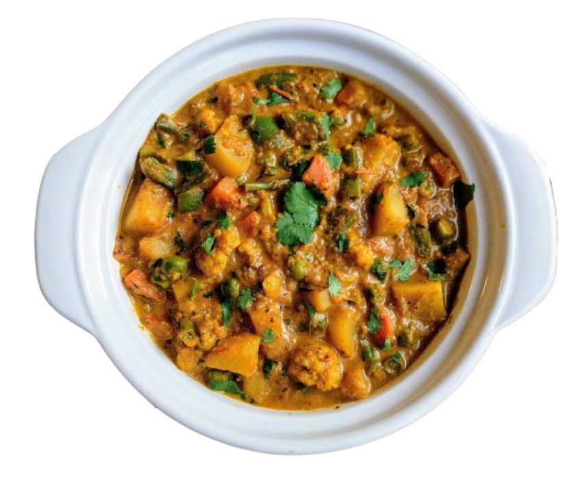
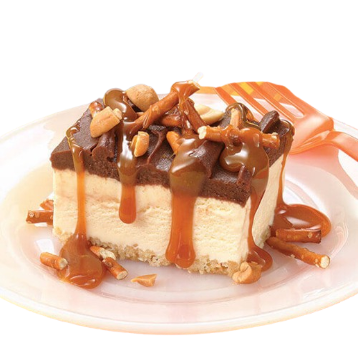
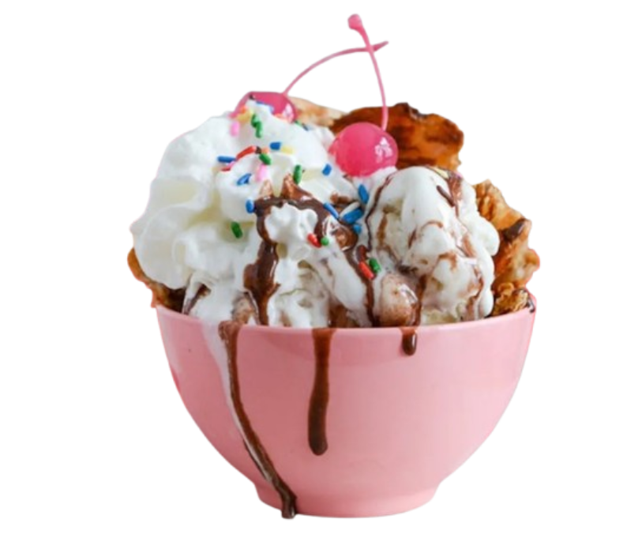
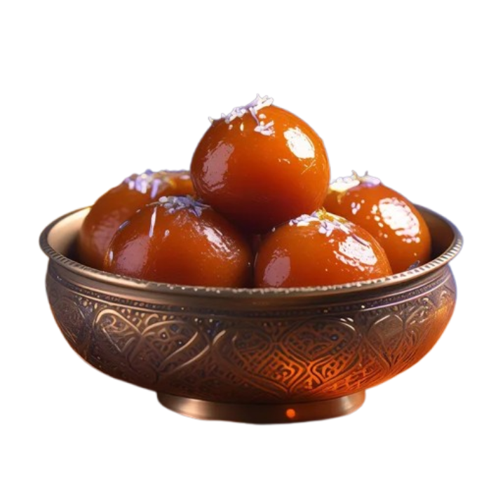

Starters
Tomato Soup
Tomato soup is a soup with tomatoes as the primary ingredient. It can be served hot or cold, and may be made in a variety of ways. It may be smooth in texture, and there are also recipes that include chunks of tomato, cream, chicken or vegetable stock, vermicelli, chunks of other vegetables and meatballs.
Spring Rolls
Spring rolls are rolled appetizers or dim sum commonly found in Chinese and Southeast Asian cuisines. The kind of wrapper, fillings, and cooking technique used, as well as the name, vary considerably depending on the region's culture, though they are generally filled with vegetables.
Garlic Bread
Garlic bread consists of bread, topped with garlic and occasionally olive oil or butter and may include additional herbs, such as oregano or chives. It is then either grilled until toasted or baked in a conventional or bread oven.
Main Course
Grilled Paneer
Grilled paneer is a popular Indian dish made from marinated paneer (a type of fresh, non-melting cheese) that is cooked over a grill or in a pan until golden and slightly charred. The marinade often includes spices like turmeric, cumin, coriander, and chili powder, along with yogurt or lemon juice for tanginess. It's served hot, often with fresh herbs and a side of chutney or salad.
Paneer Butter Masala
Paneer Butter Masala is a rich and creamy North Indian curry made with soft paneer cubes cooked in a luscious tomato-based gravy. The sauce is flavored with butter, cream, and a blend of aromatic spices like garam masala, cumin, and coriander. It's mildly spiced with a hint of sweetness, making it a favorite in Indian cuisine.
Mixed Vegetable Curry
Mixed vegetable curry is a flavorful and healthy Indian dish made by cooking a variety of vegetables, such as carrots, peas, potatoes, bell peppers, and cauliflower, in a spiced gravy. The gravy is often based on tomatoes, onions, and garlic, with spices like turmeric, cumin, coriander, and garam masala adding depth and heat.
Desserts
Chocolate Cake
Chocolate cake is a rich and moist dessert made from a batter of cocoa powder or melted chocolate, flour, sugar, eggs, butter, and baking agents. It's often layered with or topped with chocolate frosting or ganache, giving it an indulgent and decadent taste. It's a popular treat for celebrations, enjoyed by chocolate lovers worldwide.
Ice Cream Sundae
An ice cream sundae is a classic dessert made by topping scoops of ice cream with various toppings such as chocolate or caramel sauce, whipped cream, nuts, sprinkles, and a cherry. It’s customizable and often includes fruits, cookies, or syrups, offering a delicious mix of textures and flavors.
Gulab Jamun
Gulab Jamun is a popular Indian dessert made from soft, deep-fried dough balls traditionally made with khoya (reduced milk solids) or milk powder. The fried balls are soaked in a fragrant sugar syrup flavored with cardamom, rose water, or saffron, giving them a sweet, rich flavor. These melt-in-your-mouth treats are often served warm and are a staple at Indian festivals and celebrations.